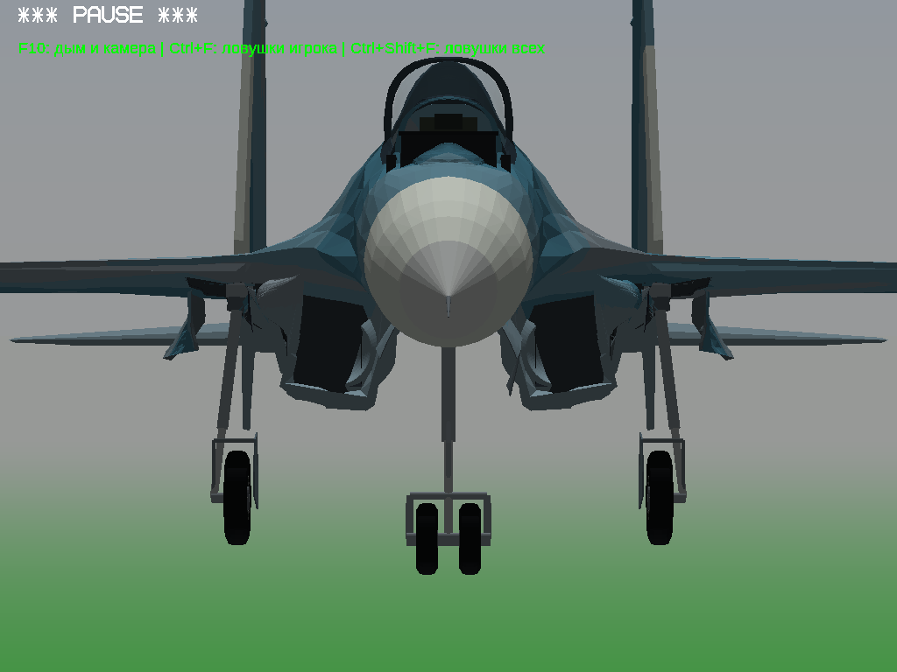
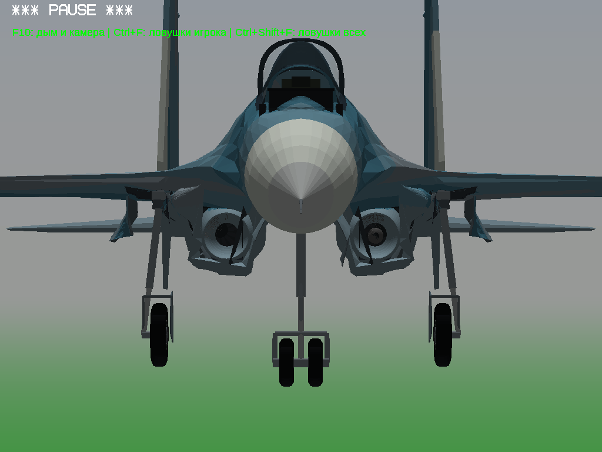

Причина: передние стенки GearWell_Left/Right пересекали воздухозаборники (z≈−0,39м). Это стенки ниши шасси, не детали двигателя. Диагностическое скрытие GearWell подтвердило исчезновение объекта; скрытие IntakeDuct и MainBayFixedSkin его не устраняло.
Удалены только перекрывающие грани передних стенок:148 слева и150 справа, включая обратные грани. Сохранены все записи вершин, все остальные грани без пересоздания, остальные меши и узлы/трансформации/состояния анимации. Источник ошибочного построения — исторический gear.py, формирование вертикальных стенок GearWell (строки205..213); старый конвертер не переписывался. Новый fix.py делает фильтрацию конкретных блоков граней готовой модели5.
В игровом архиве отличается единственный файл aircraft/su30sm.dnm. EXE, DAT, cockpitDNM, текстуры, остальные самолёты и файлы неизменны. Машинный аудит. Проверено визуально в действующем движке OpenGL64 через Wine; новую проверку Windows32 не выполняли, бинарные файлы не менялись.

